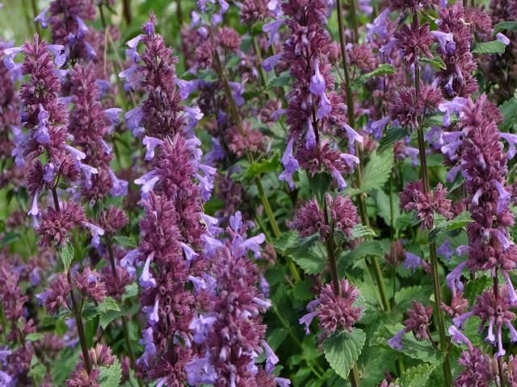
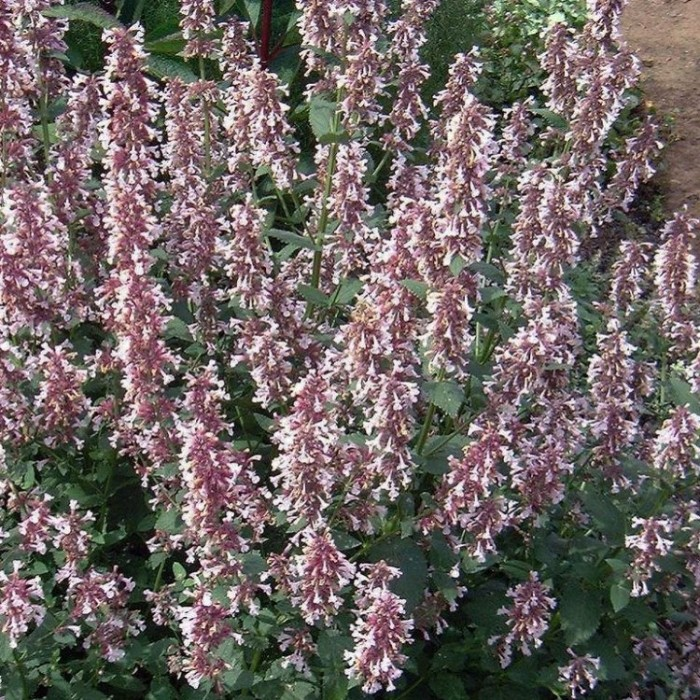
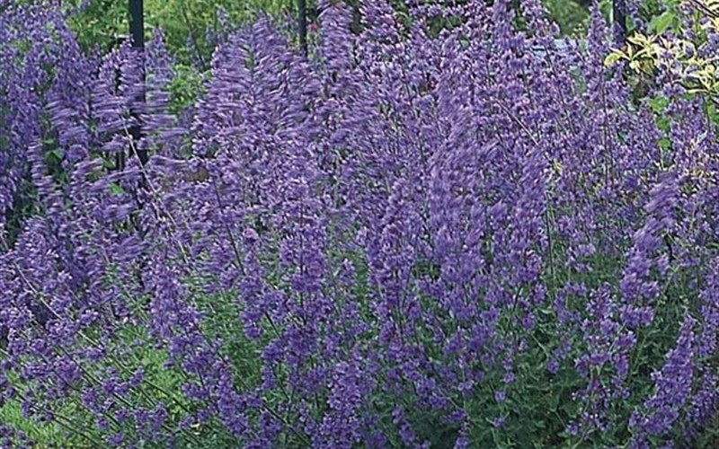

Catnip Ratings
The top 10 catnip varieties according to
Cat's Best.
- "Blue Danube" (Nepeta grandiflora) 10/10
- "Dawn to Dusk" (Nepeta grandiflora) 9.8/10
- "Dropmore" (Nepeta x faassenii) 9.5/10
- "Real Catnip" (Nepeta cataria) 9.4/10
- "Glacier Ice" (Nepeta x faassenii) 9.2/10
- "Grog" (Nepeta racemose) 9.1/10
- "Odeur Citron" (Nepeta racemose) 9/10
- "Six Hills Giant" (Nepeta x faassenii) 8.9/10
- "Superba" (Nepeta racemose) 8.7/10
- "Walkers Low" (Nepeta x faassenii) 8.6/10

Blue Danube

Dawn to Dusk

Dropmore